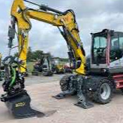

Våra tjänster är många, och det kan vara svårt att hålla koll på alla. Även då vi speciealiserar oss inom grävtjänster så erbjuder vi fortfarande mindre tjänster inom exempelvis gräsklippning under sommaren eller snöröjning under vintern. Här följer en lista av det vi är bäst på:
- Grävtjänst - vi gräver alla hål du begär!
- Rörläggning - exempelvis för att lägga vattenledningar under marken
- Utpumpning - exempelvis av vatten eller brunnar
- Hyvling & Underhåll av Vägar - primärt grus och jordvägar
- Fyllning & Transport - vi använder vår utrustning för att fylla i hål och flytta på restmaterial
- Uthyrning av Fordon och Utrustning - Du kan hyra ut vårt tungt maskineri, verktyg, eller säkerhetsutrustning
Galleri
